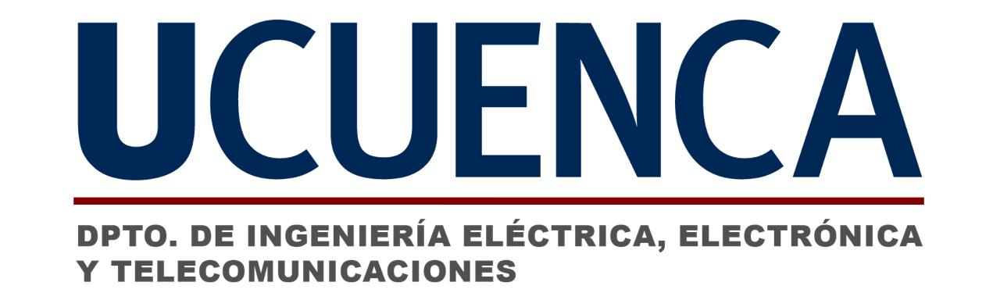

Intrinsic Challenge → IA
Resolviendo problemas de robótica clásica
en tiempos de IA
Del modelado a mano al aprendizaje en simulación masiva
Problema
Aprendizaje
Simulación
Mundo real
Jean Aucapiña
·
Henry Maldonado
Universidad de Cuenca · 2026

1 / 10
Siguiente →